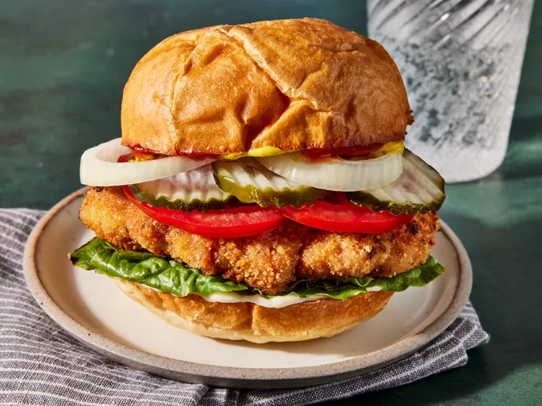

Indiana Breaded Tenderloin Sandwich

Description
An Indiana pork tenderloin sandwich consists of a breaded and fried pork tenderloin cutlet that's served on a bulky kaiser roll with lettuce, tomatoes, and basic condiments.
It's not well known outside of the state, but if you ever come to Indiana, make it a point to try this specialty sandwich.
Ingredients
-
4 slices of pork tenderloin
-
1 large egg, beaten
-
2 tbsps milk
-
1 tsp salt
-
1/4 tsp black pepper
-
1/4 tsp garlic powder
-
1/4 teaspoon onion powder
-
1/4 tsp seasoned salt
-
1/4 tsp dried marjoram
-
1 1/2 cups bread crumbs
-
1/2 cup peanut oil
-
4 kaiser rolls
Steps:
-
Gather all ingredients.
-
Flatten pork slices, one at a time, by placing in between two pieces of sturdy plastic and pounding with a meat mallet
until 1/4-inch thick and about 3 1/2x5 inches in size.
-
Whisk egg and milk together in a shallow bowl; stir in salt, pepper, garlic powder, onion powder, seasoned salt, marjoram, and oregano until well blended. Place bread crumbs into another shallow bowl.
-
Dip each flattened cutlet into seasoned egg mixture, then dip into bread crumbs until thoroughly coated. Set breaded cutlets in a single layer on a piece of parchment or waxed paper.
-
Heat oil in a large skillet until shimmering. Gently lower cutlets into the hot skillet and fry until golden brown, about 4 minutes per side. Drain on paper towels.
-
Set an oven rack about 6 inches from the heat source and preheat the oven's broiler. Place kaiser rolls, split-sides up, onto a baking sheet.
-
Broil in the preheated oven until toasted and hot, about 1 minute.
-
Remove from the oven and assemble sandwiches: Place fried cutlets on roll bottoms.
-
Add toppings in the desired order: mayonnaise, ketchup, mustard, pickle, onion, tomato, and lettuce. Top sandwiches with roll tops and serve.
Return to Home